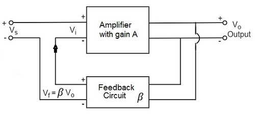
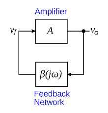

An amplifier circuit simply increases the signal strength. But while amplifying, it just increases the strength of its input signal whether it contains information or some noise along with information. This noise or some disturbance is introduced in the amplifiers because of their strong tendency to introduce hum due to sudden temperature changes or stray electric and magnetic fields. Therefore, every high gain amplifier tends to give noise along with signal in its output, which is very undesirable.
The noise level in the amplifier circuits can be considerably reduced by using negative feedback done by injecting a fraction of output in phase opposition to the input signal.
The feedback-amplifier can be defined as an amplifier which has feedback lane that exists between o/p to input. In this type of amplifier, feedback is the limitation which calculates the sum of feedback given in the following amplifier. The feedback factor is the ratio of the feedback signal and the input signal.

1. Positive Feedback Amplifier:
The positive feedback can be defined as when the feedback current otherwise voltage is applied for increasing the i/p voltage, then it is named as positive feedback. Direct feedback is another name of this positive feedback. Because positive feedback generates unnecessary distortion; it is not often used in amplifiers. But, it amplifies the original signal power and can be used in oscillator circuits.
2. Negative Feedback Amplifier:
The negative feedback can be defined as if the feedback current otherwise voltage can be applied for reducing the amplifier i/p, then it is called as negative feedback. Inverse feedback is another name of this negative feedback. This kind of feedback is regularly used in amplifier circuits.

An Oscillator is basically an Amplifier with “Positive Feedback”, or regenerative feedback (in-phase) and without any external input signal that generates an output waveform of a desired frequency.
An oscillator is basically a waveform generator which generates an output waveform, which oscillates with constant amplitude & constant desired frequency.
The frequency of oscillation at which sinusoidal oscillator operates is the frequency for which the total shift introduced, as the signal proceeds from the input terminals, through the amplifier and feedback network, and back again to the input, is precisely zero (or an integral multiple of 2*Π).
Stated simply the condition A*β = -1 at ω= ωo, i.e. the magnitude of loop gain should be one and phase of loop gain should be unity (the feedback network introduces 1800 phase shift, the other 1800 phase shift is provided by Amplifier) is called Barkhausen criterion.
A closed loop system with negative feedback can be represented by a transfer function = A/(1+A*β). Often feedback network consists of only resistive elements and is independent of frequency but amplifier gain is a function of frequency. Hence the loop gain A*β is a function of frequency. There may exist a frequency ωo at which its magnitude is one and phase is 1800 i.e. A*β = -1 (Barkhausen criterion).
In an RC Oscillator circuit the input is shifted 1800 through the feedback circuit returning the signal out-of-phase and 1800 again through an inverting amplifier stage to produces the required positive feedback. This then gives us “1800 + 1800 = 3600” of phase shift which is effectively the same as 00, thereby giving us the required positive feedback . In other words, the total phase shift of the feedback loop should be “0” or any multiple of 3600 to obtain the same effect.
In a Resistance-Capacitance Oscillator or simply known as an RC Oscillator, we can make use of the fact that a phase shift occurs between the input to a RC network and the output from the same network by using interconnected RC elements in the feedback branch, for example.
The circuit on the left shows a single resistor-capacitor network whose output voltage “leads” the input voltage by some angle less than 900.
In a pure or ideal single-pole RC network. it would produce a maximum phase shift of exactly 900, and because 1800 of phase shift is required for oscillation, at least two single-poles networks must be used within an RC oscillator design.
However in reality it is difficult to obtain exactly 900 of phase shift for each RC stage so we must therefore use more RC stages cascaded together to obtain the required value at the oscillation frequency. The amount of actual phase shift in the circuit depends upon the values of the resistor (R) and the capacitor (C), at the chosen frequency of oscillations with the phase angle ( φ ) being given as:
Where: Xc is the Capacitive Reactance of the capacitor, R is the Resistance of the resistor, and ƒ is the Frequency.
In our simple example above, the values of R and C have been chosen so that at the required frequency the output voltage leads the input voltage by an angle of about 600. Then the phase angle between each successive RC section increases by another 600 giving a phase difference between the input and output of 1800 (3 x 600) as shown by the following vector diagram.
So by cascading together three such RC networks in series we can produce a total phase shift in the circuit of 1800 at the chosen frequency and this forms the bases of a “RC Oscillator” otherwise known as a Phase Shift Oscillator as the phase angle is shifted by an amount through each stage of the circuit.
Then the phase shift occurs in the phase difference between the individual RC stages. Conveniently op-amp circuits are available in quad IC packages. For example, the LM124, or the LM324, etc. so four RC stages could also be used to produce the required 1800 of phase shift at the required oscillation frequency.
We know that in an amplifier circuit either using a Bipolar Transistor or an Inverting Operational Amplifier configuration, it will produce a phase-shift of 1800 between its input and output. If a three-stage RC phase-shift network is connected as a feedback network between the output and input of an amplifier circuit, then the total phase shift created to produce the required regenerative feedback is: 3 x 600 + 1800 = 3600 = 00 as shown.
The three RC stages are cascaded together to obtain the required slope for a stable oscillation frequency. The feedback loop phase shift is -1800 when the phase shift of each stage is -600. This occurs when ω = 2*pi*ƒ = 1.732/RC as (tan 600 = 1.732). Then to achieve the required phase shift in an RC oscillator circuit is to use multiple RC phase-shifting networks such as the circuit below.
The basic RC Oscillator which is also known as a Phase-shift Oscillator, produces a sine wave output signal using regenerative feedback obtained from the resistor-capacitor (RC) ladder network. This regenerative feedback from the RC network is due to the ability of the capacitor to store an electric charge, (similar to the LC tank circuit).
This resistor-capacitor feedback network can be connected as shown above to produce a leading phase shift (phase advance network) or interchanged to produce a lagging phase shift (phase retard network) the outcome is still the same as the sine wave oscillations only occur at the frequency at which the overall phase-shift is 3600.
By varying one or more of the resistors or capacitors in the phase-shift network, the frequency can be varied and generally this is done by keeping the resistors the same and using a 3-ganged variable capacitor because capacitive reactance (Xc) changes with a change in frequency as capacitors are frequency-sensitive components. However, it may be required to re-adjust the voltage gain of the amplifier for the new frequency.
If the three resistors, R are equal in value, that is R1 = R2 = R3, and the capacitors, C in the phase shift network are also equal in value, C1 = C2 = C3, then the frequency of oscillations produced by the RC oscillator is simply given as:
Where:
ƒr is the oscillators output frequency in Hertz
R is the feedback resistance in Ohms
C is the feedback capacitance in Farads
N is the number of RC feedback stages
This is the frequency at which the phase shift circuit oscillates. In our simple example above, the number of stages is given as three, so N = 3 (√2*3 = √6). For a four stage RC network, N = 4 (√2*4 = √8), etc.
Since the resistor-capacitor combination in the RC Oscillator ladder network also acts as an attenuator, that is the signal reduces by some amount as it passes through each passive stage.
It could be assumed that the three phase shift sections are independent of each other but this is not the case as the total accumulative feedback attenuation becomes -1/29th ( Vo/Vi = β = -1/29 ) across all three stages.
Thus the voltage gain of the amplifier must be sufficiently high enough to overcome these passive RC losses.
Clearly then in order to produce a total loop gain of -1, in our three stage RC network above, the amplifier gain must be equal to, or greater than, 29 to compensate for the attenuation of the RC network.